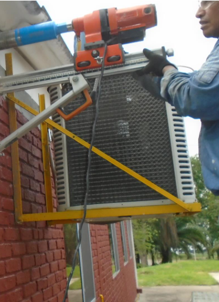
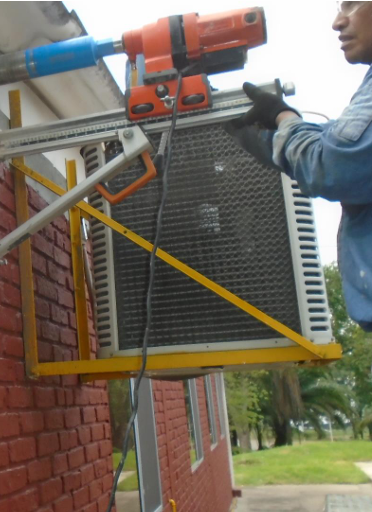

ID&C SAS Ofrece el servicio de evaluación, análisis y diagnostico de estructuras existentes
mediante procesos patológicos, con equipos de tipo destructivos y no destructivos así como
como ensayos de laboratorio; entre los equipos de patología tenemos:
- Esclerómetros Digital Marca Porceq
- Esclerómetro análogo Marca Gilson
- Equipo Ultrasonido Pundit Lab Marca Proceq
- Ferro-escáner Profometer Marca Proceq
- Escáner y detector de potencial de corrosión Profometer Corrosión Marca Proceq
- Medidor de resistividad del concreto Resipod Marca Proceq
- Contadores de hilos para fisuras
- Saca núcleos
- Phmetro
ID&C SAS es una empresa que cuenta con una gran experiencia en el campo desarrollo de
patologías, vulnerabilidades y diseño de reforzamientos; entre los proyectos realizados en este
campo tenemos los siguientes:
- Patología, vulnerabilidad sísmica y diseño de reforzamiento en edificio SENA San Andrés Islas
- Patología estructural colegio Bautista Emanuel San Andrés Islas
- Patología estructural colegio Flowers Hill San Andrés Islas
- Patología estructural y vulnerabilidad sísmica bodega Distrihumber San Andrés Islas
- Patología y vulnerabilidad sísmica tanque de almacenamiento de agua potable Acuecar Carmen de Bolívar
- Patología y vulnerabilidad sísmica del claustro San Fernando en el centro histórico de Cartagena de Indias
- Patología y vulnerabilidad sísmica edificio El Laguito Cartagena de Indias
- Patología y vulnerabilidad sísmica casa quita la Champetua Islas del Rosario Cartagena de Indias
- Patología Colegio el Rosario, Refinería de Ecopetrol Barrancabermeja
- Patología Colegio Luis López Meza Ecopetrol El Centro Santander
- Patología Colegio Domingo Savio Ecopetrol Tibu Norte de Santander
- Patología y vulnerabilidad Colegio el Rancho San Andrés Isla
- Patología y vulnerabilidad Casa la Asamblea San Andrés Isla
- Patología y vulnerabilidad Edificio FED San Andrés Isla
- Patología y vulnerabilidad de la Casa de Justicia San Andres Isla
- Patología y vulnerabilidad sísmica Teatro Adolfo Mejía centro histórico de Cartagena
- Patología y vulnerabilidad sísmica edificio Sarie Bay San Andrés Islas
- Patología y vulnerabilidad sísmica edifico 5 niveles barrio Lo Amador Cartagena
- Patología a 16 edificaciones construidos por las empresas de la familia Quiroz en Cartagena
- Patología y vulnerabilidad sísmica a casa de la asamblea Cartagena
- Patología y vulnerabilidad sísmica edificio Faro de Tequendama barrio El Laguito Cartagena
- Patología y vulnerabilidad sísmica Puente de los enamorados Isla de Providencia y Santa Catalina
- Patología y vulnerabilidad sísmica edificio Aury Isla de Providencia
- Patología y vulnerabilidad sísmica casa republicana barrio Pie dela Popa Cartagena
- Patología y vulnerabilidad sísmica casa republicana sede AVIATUR barrio El Cabrero Cartagena
- Patología Institución Educativa Agropecuaria Puerto Vencía
- Patología Institución Educativa Guaranda
- Patología muelle Argos Sede Cartagena
- Patología 3 casas de dos (2) niveles urbanización Bonanza Turbaco Bolívar
- Patología Colegio Instituciones educativas en construcción en Pinillos, San Jacinto del Cauca, Mompox Bolívar
- Patología y vulnerabilidad Hospital de Providencia
- Patología y vulnerabilidad para posible demolición del Muelle Zona Franca Argos
- Patología y vulnerabilidad sísmica estación de bombeo de aguas Veolia en la isla de San Adres
- Patología y vulnerabilidad sísmica estación eléctrica Sopesa Providencia
- Patología piñas y muelle de carga de combustible Ecopetrol
- Patología y vulnerabilidad a piñas de soporte de banda transportadora de productos al muelle Argos en la ciudad de Cartagena
 
